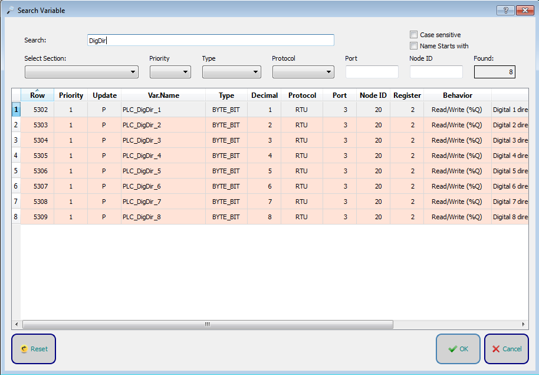

Die Taste Reset setzt alle Suchparameter zurück.
Die Taste Reset setzt alle Suchparameter zurück.
Durch Klicken auf die Taste Suchen wird das Fenster für die erweiterte Suche angezeigt.

Im Fenster ist es möglich, die Suche zu verfeinern, indem Sie die Parameter auswählen, aus denen die Variablen in Crosstable bestehen.
Die Taste Reset setzt alle Suchparameter zurück.
 Mit der Taste OK gehen Sie zu der ausgewählten Variablen in der Crosstable.
Mit der Taste OK gehen Sie zu der ausgewählten Variablen in der Crosstable.
 Mit der Taste Cancel wird das Fenster geschlossen.
Mit der Taste Cancel wird das Fenster geschlossen.